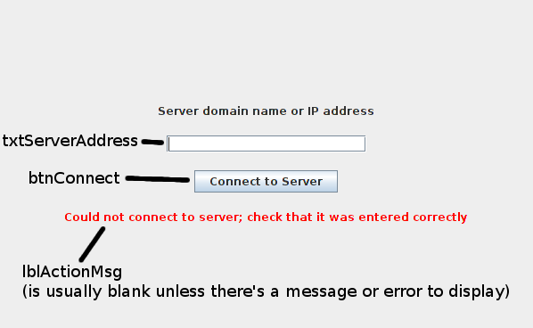

Clayton Ketner, Anthony Quach, Joseph Li
Andrew Downing, Cullon Hecox, Justin Sanders
CS200 - Group 11 “Java Bosses”
Kitting Cell Design Document
///////////////////////////////////////////////////////////////////////////////////
Delete this before submitting
Notes (add notes, questions, and suggestions here):
/*****************************************Anthony********************************************/
-added a Camera class in the helper class area, which i think should belong on the server because multiple clients need to take pictures.
---- Anthony
/*********************************************************************************************/
/*****************************************Cullon************************************************/
Here’s my number if you have any questions or complaints for me: 308-529-2840. I will be finishing my gantry this afternoon.
From Cullon:
Justin has done a great job of getting us started, guys. Something we should try to follow is consistent naming conventions so that we are all on the same page when things start getting serious and confusing. It really does help and doesn’t require any extra work. So, I recommend the following:
JLabels are prefixed with lbl_____ (the blank is where your variable name will go)
JTextFields are prefixed with txt______
JButtons are prefixed with btn______
Sockets shall be named sock[clientName] (e.g. the gantry socket will be named
sockGantry)
(add more as they come to mind)
/************************************************************************************************/
/******************************************Joseph***********************************************/
From Joseph:
JComboBoxes are prefixed with jcb___
Panels are prefixed with pnl_____
/*************************************************************************************************/
/*****************************************Andrew********************************************/
I am using camelCase (first character lowercase) for variables and CamelCase (first character uppercase) for constants (a.k.a. final variables). Is that what the rest of you do?
The helper classes I made are NetComm, ConnectPanel, and Movement, and you can view the code for them at https://github.com/usc-csci200-fall2012/team11. See my email for where and how to use them.
Justin reminds me to add comments if anyone needs to move more classes to data classes section
/*************************************************************************************************/
//////////////////////////////////////////////////////////////////////////////////////////
Purpose/Overview:
This program is designed to provide GUI support to a kitting cell that assembles kits full of parts for use by other assembly cells. There will be one server application to interact with the back end of the kitting cell and track the state of each of the cell’s devices. There will be several client applications that will serve as a GUI for various humans needing to interact with the kitting cell. These client applications will communicate with the server application to display the state of various cell devices to their respective user. They will also take input to send configuration information to the cell. Figure 1 below shows what the factory production manager’s monitoring screen will look like.
Figure 1: Concept art of the factory manager’s view of the kitting cell[a].
Requirements:
This piece of software will have one server application which will send and receive information to and from the back end of the kitting cell and will communicate similarly with several GUI clients. The server will hold the “state” information about each device within the cell. This information may be updated by the front or back end. Each of the client application GUIs will allow a kitting cell employee to view the state of the device(s) for which they are responsible. Some GUIs will also allow the user to set configuration information or simulate non-normative scenarios within the factory. The GUI clients consist of:
Data Classes (these all implement Serializable):
void draw(Graphics g, long elapsedMillis)
Camera:
Camera that takes pictures
Member data:
myImage[i] - image that is saved after taking a picture
flashLocation - location of where the camera will take its picture
(Ignore “cameraInUse” if agents take care of camera timing)
cameraInUse - boolean variable for when camera is in use
Method:
isCameraInUse() - checks if camera is in use
setLocation() - sets flashLocation to where a picture will be taken
takePicture() - the camera will flash, take a picture, and store it in
myImage
getImage() - returns the image
(Ignore following methods if agents take care of camera timing)
usingCamera() - sets cameraInUse to true
doneUsingCamera() - sets cameraInUse to false
todo: define GUICamera[j]
Networking Message Classes (these all implement Serializable):
CloseConnectionMsg
networking message indicating to close connection
class is empty (no member data or methods) because the requested command is self-evident from the data type
StringMsg
networking message containing a string
Member Data (all public):
type - instance of an enum indicating the type of message (NewPart, ChangePart, DeletePart, NewKit, ChangeKit, DeleteKit, ProduceKits, NonNormative)
message - content of string message (generally empty strings indicate success and non-empty strings are an error description)
Methods:
StringMsg - constructor to set up StringMsg with specified type and message
NewPartMsg
networking message indicating to add a new part
(is a separate class even though it only contains 1 instance variable because it specifies that the command is to add a new part)
Member Data (all public):
part - Part instance to add
ChangePartMsg
networking message indicating to change a part
Member Data (all public):
oldName - old name of part to change
part - replacement Part
DeletePartMsg
networking message indicating to delete a part
Member Data (all public):
name - name of part to delete
PartListMsg
networking message listing all available parts
Member Data (all public):
parts - ArrayList of available parts
NewKitMsg
networking message indicating to add a new kit
(is a separate class even though it only contains 1 instance variable because it specifies that the command is to add a new kit)
Member Data (all public):
kit - Kit instance to add
ChangeKitMsg
networking message indicating to change a kit
Member Data (all public):
oldName - old name of kit to change
kit - replacement Kit
DeleteKitMsg
networking message indicating to delete a Kit
Member Data (all public):
name - name of kit to delete
KitListMsg
networking message listing all available kits
Member Data (all public):
kits - ArrayList of available kits
ProduceKitsMsg
networking message specifying kits to produce in factory
Member Data (all public):
name - name of kit to produce
howMany - how many new kits to produce
ProduceStatusMsg
networking message listing status of all kits in production
Member Data (all public):
kitCmds - ArrayList of ProduceKitsMsg’s that have been sent to server
kitStatus - ArrayList of instances of an enum indicating whether each kit command is queued, in production, or completed
FactoryStateMsg[k]
NonNormativeItemMsg
networking message indicating to break or fix an item
Member Data (all public):
fix - true if should fix item, false if should break item
type - instance of an enum indicating the type of item to break or fix (todo: list types[l])
id - integer ID of item to break or fix[m]
Manager Classes:
Server:
Server
class implementing a non-GUI server application to coordinate factory clients over a network
Member Constants (all public and static):
Port - networking port that server listens on
SettingsPath - path of file where factory state is saved
Member Data (all private):
serverSocket - server socket used to set up connections with clients
netComms - ArrayList of client connections
partTypes - ArrayList of Parts that are available to produce
kitTypes - ArrayList of Kits that are available to produce
produceStatus - ProduceStatusMsg storing current kit production status
todo: store factory stat[n]e (also need a way to know which clients to send updated factory state to)
Methods:
Server - constructor for server class
main - instantiates a new Server
actionPerformed - called during timer tick; updates simulation and broadcasts updated factory state to clients
msgReceived - handle message received from clients (takes message and NetComm that received the message); generally calls another method to handle the specific message
addPart - takes an AddPartMsg and client index, adds part to partTypes (if valid), sends StringMsg to client indicating success or failure
changePart - takes a ChangePartMsg and client index, changes specified part (if valid and not in production), sends StringMsg to client indicating success or failure
deletePart - takes a DeletePartMsg and client index, deletes part with specified name (if exists), sends StringMsg to client indicating success or failure
listParts - takes client index and sends partTypes to client in a PartListMsg (called when server receives a PartListMsg, but received message is not a parameter because it doesn’t influence behavior of the method)
addKit - takes an AddKitMsg and client index, adds kit to kitTypes (if valid), sends StringMsg to client indicating success or failure
changeKit - takes a ChangeKitMsg and client index, changes specified kit (if valid and not in production), sends StringMsg to client indicating success or failure
deleteKit - takes a DeleteKitMsg and client index, deletes kit with specified name (if exists), sends StringMsg to client indicating success or failure
listKits - takes client index and sends kitTypes to client in a KitListMsg (called when server receives a KitListMsg, but received message is not a parameter because it doesn’t influence behavior of the method)
produceKits - takes a ProduceKitsMsg and client index and appends it to produceStatus (if valid) indicating that it is queued, sends StringMsg to client indicating success or failure
sendProduceStatus - takes client index and sends produceStatus to client (called when server receives a ProduceStatusMsg)
changeNormative - takes a NonNormativeMsg and client index, breaks or fixes specified item, sends StringMsg to client indicating success or failure
loadSettings - load factory state from file
saveSettings - save factory state to file
Part Manager[o]:
Each time you see the icbXXXX means jcbXXXX in the MOCKUPS, the software paint can’t separate i and j

PartClient
This class contains the main method and communicates with the server.
Member Data:
parts - ArrayList of all parts
netComm - NetComm instance to communicate with server
pnlConnect - panel to let user connect to server
pnlPartl- PartPanel for prompting user input
Methods:
msgReceived - handles message from server (takes message and
NetComm that received the message)
PartPanel:
Member Data:
lblPartNumber - Label for part number
lblPartDescription - Label for part Desc
lblPartName - Label for part name
lblPartImage - Label for part image
lblPartSelected - Label for prompting the user to select a part
btnCreatePart - button for making a part
btnDelete - Delete a selected part
btnChange - Change a selected part
txtPartNumber - TextField for part number
txtPartDescription - TextField for part description
txtPartName - TextField for part name
txtPartImagePath - TextField for part image path
jcbParts - ComboBox for all of the parts
Methods:
actionPerformed() - handle the input, send any modification of the kits to server
Kit Manager:
Each time you see the icbXXXX means jcbXXXX in the MOCKUPS, the software paint can’t separate i and j

KitClient:
This class contains the main method and communicates with the server.
Member Data:
parts- ArrayList of all the parts
kits - ArrayList of all the kits
netComm- socket class to communicate with server
pnlConnect - panel to let user connect to server
pnlKit- KitPanel for prompting user input
Methods:
getKitDescription() – get the description of the kit
geKitNumber() – get the number of the kit getKitName() – get the name of the kit
getPartsInKit() - get the arraylist of parts in the kit
msgReceived - handles message from server (takes message and
NetComm that received the message)
KitPanel:
user can create a new kit, or order a existing kit.
Member Data:
lblCreateKitNumber - Label for prompting user the number of the new kit
lblCreateKitDescription - Label for kit Desc
lblCreateKitName - Label for kit name
lblCreatePartsInKit - Label for parts in a kit
lblSelectKit - Label for prompting user the name of a kit he wants to change or delete
btnDeleteKit - button for deleting a kit btnCreateKit- button for Creating a new kit
btnChangeKit - button for changing a selected kit
jcbPartsInKit - ArrayList of ComboBox for selecting parts in a kit when
creating or modifing a kit. (some of them can be empty, but parts in a kit at most can be 8)
txtKitNumber - TextField for kit number
txtKitDescription - TextField for kit description
txtKitName - TextField for kit name
jcbAvailableKits - ComboBox for the avaiable kits
Methods:
actionPerformed() - handle the input, send any modification of the kits to
server
Factory Production Manager[p][q]:
Each time you see the icbXXXX means jcbXXXX in the
MOCKUPS, the software paint can’t separate i and j

FPClient:
This class contains the main method and communicates with the server.
Member Data:
pnlConnect - panel to let user connect to server
parts - ArrayList of all possible parts
kits - ArrayList of all possible kits
netComm- socket class to communicate with server, need to update the
parts and kits
pnlFPPanel - Panel for showing the schedule
jcbSekectKit - Combobox for displaying what kits can be make
txtKitQuantity - TextField for enter kit’s quantity
lblSelectKit - Label for user to select a kit
lblDisplayName - Label for display name
lblDisplayNumber- Label for display number
lblDisplayStatus- Label for display status
lblKitsNames - arraylist of kit’s label
lblKitsNumbers - arraylist of label of kits’ quantity
lblKitsStatus - arraylist of label of kits’ status
btnSwitchView - switch button for displaying the graphical view of factory
btnProduce - Button for produce the kits
schedule<string kit’s name, int quantity> - TreeMap schedule to classify
kits and their quantity
Methods:
getKits() – get kits from the server
getParts() – get parts from the server
DeleteProducedKits(ArrayList <Kit> kits) – take the arraylist of the
available kits, check their status, if it is produced or in process, remove it from the arraylist.
writeSchdule() - Classlify the kits and write them into the labels on the
pnlFPPanel
msgReceived - handles message from server (takes message and
NetComm that received the message)
actionPerformed - receives action events
Lane Manager:
FeederClass
A feeder object.
Member Data:
diverter - boolean variable for which side of lane items go.
partsLow - boolean variable for when parts are low.
amount - int variable for amount of parts in feeder.
Methods:
setPartsLow() - makes partsLow true
setPartsUnlow() - makes partsLow false
checkIfLow() - check if there are parts in feeder, (return partsLow )
changeLane() - changes the lane parts are going. (diverter = !diverter)
getLane() - returns what lane parts are going.
(Diverter, false is lane 1, true is lane 2 )
LaneClass
A lane object.
Member Data:
GUILane1 - first GUILane
GUILane2 - second GUILane
velocity - int variable for speed of the lane.
laneOn - boolean variable for when the lane is on.
movingItems - ArrayList of X parts.
vibration - int variable for how much lane is vibrating.
Methods:
isLaneOn() - checks if lane is on, returns LaneOn
amplifyVibration() - increases vibration of lane
lowerVibration() - decreases vibration of lane
removeItem() - remove a part from MovingItems
addItem() - add a part to MovingItems
getSpeed() - return velocity of the lane
NestClass
A Nest object.
Member Data:
nestedItems - ArrayList of X parts.
nestFull - boolean variable for when nest is full.
limit - int variable for number of parts the nest can hold.
switch - boolean for when nest is up or down
Methods:
isNestFull() - checks if the nest is full, return NestFull
addPart() - adds a part to the NestedItems
removePart() - removes a part from NestedItems
dumpNest() - removes all parts from NestedItems
flipSwitch() - flips the switch ( switch = !switch )
WholeLaneClass
Class with a feeder, lane, and nest as a set.
Member Data:
myFeeder - Feeder object for the lane.
myLane - Lane object for the lane.
myTopNest - Top nest object for lane.
myBottomNest - Bottom nest object for lane.
Methods:
turnOnLane() - turns its lane on
isFeederLow() - checks if feeder is low
isTopNestFull() - checks if top nest is full
isBottomNestFull() - checks if bottom nest is full
vibrateLane() - increases vibration of the lane
unvibrateLane() - decreases vibration of the lane
takePicOfNests() - takes a picture of both nests
flipNestOneSwitch() - flips Nest 1’s switch
flipNestTwoSwitch() - flips Nest 2’s switch
LaneClient
This class shows all the feeder, lanes, nests operating.
Member Data:
Lanes - ArrayList of 4 WholeLanes.
pnlBreakThings - Panel for breaking things
netComm- socket to communicate with the server
Methods:
takePictureOfLane1Nests() - takes a picture of lane 1’s nests if possible
takePictureOfLane2Nests() - takes a picture of lane 2’s nests if possible
takePictureOfLane3Nests() - takes a picture of lane 3’s nests if possible
takePictureOfLane4Nests() - takes a picture of lane 4’s nests if possible
getPartFromNest1() - gets a part from nest1.
getPartFromNest2() - gets a part from nest2.
getPartFromNest3() - gets a part from nest3.
getPartFromNest4() - gets a part from nest4.
getPartFromNest5() - gets a part from nest5.
getPartFromNest6() - gets a part from nest6.
getPartFromNest7() - gets a part from nest7.
getPartFromNest8() - gets a part from nest8.
feedFeeder1() - fill feeder1
feedFeeder2() - fill feeder2
feedFeeder3() - fill feeder3
feedFeeder4() - fill feeder4
divertFeeder1() - switches the position of feeder 1’s diverter
divertFeeder2() - switches the position of feeder 2’s diverter
divertFeeder3() - switches the position of feeder 3’s diverter
divertFeeder4() - switches the position of feeder 4’s diverter
fixLane1() - attempts to fix lane 1 by increasing vibration
fixLane2() - attempts to fix lane 2 by increasing vibration
fixLane3() - attempts to fix lane 3 by increasing vibration
fixLane4() - attempts to fix lane 4 by increasing vibration
paintWholeLanes() - paints all feeders, lanes, nests, parts
Mockup of the client:

BreakThings
Panel with options for breaking parts of the lanes
Member Data:[r]
btnBreakFeeder1 - the button prevents feeder1 from working
btnBreakFeeder2 - the button prevents feeder2 from working
btnBreakFeeder3 - the button prevents feeder3 from working
btnBreakFeeder4 - the button prevents feeder4 from working
btnBreakLane1 - the button causes lane1 to stop
btnBreakLane2 - the button causes lane2 to stop
btnBreakLane3 - the button causes lane3 to stop
btnBreakLane4 - the button causes lane4 to stop
btnBreakNest1 - the button causes nest1 to spill
btnBreakNest2 - the button causes nest1 to spill
btnBreakNest3 - the button causes nest1 to spill
btnBreakNest4 - the button causes nest1 to spill
btnBreakNest5 - the button causes nest1 to spill
btnBreakNest6 - the button causes nest1 to spill
btnBreakNest7 - the button causes nest1 to spill
btnBreakNest8 - the button causes nest1 to spill
btnFixFeeder1 - the button fixes feeder1
btnFixFeeder2 - the button fixes feeder2
btnFixFeeder3 - the button fixes feeder3
btnFixFeeder4 - the button fixes feeder4
btnFixLane1 - the button fixes lane1
btnFixLane2 - the button fixes lane2
btnFixLane3 - the button fixes lane3
btnFixLane4 - the button fixes lane4
btnFixNest1 - the button fixes nest1
btnFixNest2 - the button fixes nest2
btnFixNest3 - the button fixes nest3
btnFixNest4 - the button fixes nest4
btnFixNest5 - the button fixes nest5
btnFixNest6 - the button fixes nest6
btnFixNest7 - the button fixes nest7
btnFixNest8 - the button fixes nest8
lblFeeder1 - shown next to feeder1
lblFeeder2 - shown next to feeder2
lblFeeder3 - shown next to feeder3
lblFeeder4 - shown next to feeder4
lblLane1 - shown next to lane1
lblLane2 - shown next to lane2
lblLane3 - shown next to lane3
lblLane4 - shown next to lane4
lblNest1 - shown next to nest1
lblNest2 - shown next to nest2
lblNest3 - shown next to nest3
lblNest4 - shown next to nest4
lblNest5 - shown next to nest5
lblNest6 - shown next to nest6
lblNest7 - shown next to nest7
lblNest8 - shown next to nest8
Methods:
actionListener - sends status of feeders, lanes, nests to server
Kit Assembly Manager:
KitClient
This class contains the main method and communicates with the server.
Member Data:
kits - ArrayList of currently queued kits
netComm ( socket ) - instance of NetComm class for communication
with the server.
kitRobot - instance of a kit robot
partRobot - instance of a part robot
pnlKitAssembly - JPanel to add the KitAssemblyPanel to
pnlSwitchPanelButton - JPanel for a button to switch to the non-
normative controls panel
kitAssemblyPanel - declaration of instance of KitAssemblyPanel
kitAssemblyBreakPanel - declaration of instance of
KitAssemblyBreakPanel
Methods:
sendKitRobotTask( startStation, endStation, time ) - sends task to kit
robot.
sendPartRobotTask( nestNumber, kitStation, time ) - sends task to part
robot.
getKitRobotPos - returns position of kit robot
getPartRobotPos - returns position of part robot
KitAssemblyPanel
This class is a JPanel that displays the kitting stand, the kit robot, the kit delivery station, and the part robot.
Member Data:
Methods:
paintKitAssemblyPanel - paints background images and instructs objects
to repaint themselves.
takePicture - takes a picture
KitAssemblyBreakPanel
This class allows the user to break the kit robot, part robot, and kit delivery station
Member Data:
lblKitRobot - JLabel for kit robot
lblPartRobot - JLabel for part robot
lblKitDelivery - JLabel for kit delivery station
radioBreakKitRobot - JRadioButton to break the kit robot
radioFixKitRobot - JRadioButton to fix the kit robot
radioBreakPartRobot - JRadioButton to break the part robot
radioFixPartRobot - JRadioButton to fix the part robot
radioBreakKitDelivery - JRadioButton to break the kit delivery station
radioFixKitDelivery - JRadioButton to fix the kit delivery station
Methods:
actionListener - send message to server via netComm updating the
status of the kit robot, part robot, or kit delivery station.
Gantry Robot Manager:[s]
GantryClient
This class contains the main method and communicates with the server.
Member Data:[t]
netComm- socket class to communicate with server
Methods:
main- remains in an infinite while-loop polling server commands
updateInfo - notifies server of any and all changes to bins and gantry
GantryPanel
This class is a JPanel that displays a wide view of the gantry robot
Member Data:
bins- ArrayList of bins on the floor
gantry - gantry robot
allLocations - ArrayList of all possible locations of bins
originalLocations - ArrayList of bins’ original location before being moved
around (subset of allLocations)
purgeLocations - arraylist of purge stations (subset of allLocations)
tempLocations - arraylist of temporary locations (subset of allLocations)
Methods:
paintGantryPanel - paints background images and instructs objects to
repaint themselves.
takePicture - takes a picture
Helper Classes:
NetComm
encapsulates networked communication with a single client or server
Member Data (all private):
node - object that is notified when a new message is received
socket - client socket that is endpoint for network communication
in - ObjectInputStream that reads messages related to this client over the network
out - ObjectOutputStream that writes messages related to this client over the network
Methods:
NetComm - constructor that initializes communication with given node (that implements Networked) and given Socket; throws IOException if fails
write - write specified object to output stream
close - close connection
NetCommReader
inner class of NetComm that runs on a separate thread to receive messages
Methods:
run - keep polling for new messages, and forward received messages to network node (this is automatically called when thread starts)
read - returns object read from input stream, or null if no new message,
or a CloseConnectionMsg if either client or server disconnected from network
ConnectPanel
panel that all client (manager) classes display to let user connect to server; this class is based on SignInPanel.java in Andrew's HW3 submission
Mockup (labeled components are described in Member Data section):

Member Data (all private):
txtServerAddress - text box to enter server domain name or IP address
btnConnect - button to connect to server
lblActionMsg - label for displaying message or error
action - reference to action listener to notify when user presses connect to server button
Methods:
ConnectPanel - constructor that sets up the panel GUI and stores reference to action listener to notify to connect to server
reset - reset text field and action message text
setActionMsg - display specified action message, allowing HTML formatting
setActionError - display specified action message in red text, allowing HTML formatting
actionPerformed - when button clicked, validate sign in info and notify parent action listener
Interfaces:
Networked
indicates that implementing class is capable of receiving messages across the network
Methods:
msgReceived - handle message received from the network (takes message and NetComm that received the message)
High-Level Architecture:
User Interfaces:
PUT MOCKUPS IN THE PANEL CLASSES. This section will be deleted before we submit the design document.
Test Cases:
[u]
[v]
[w]
[x]
[y]
[z]
[aa]
[a]culcox3:
this is sick
cketner:
Thanks! I also realized that I forgot there is supposed to be a kit robot and a part robot, so I added the kit robot.
[b]ad510n1:
we don't need this, Movement class does this already
[c]culcox3:
everything looks fine, but I'm just curious- what is the description?
cketner:
I think its just a sentence describing the part in more detail. It gets set when the kit is created. We don't need to use it for anything
[d]ad510n1:
GUIPart should link to Part but not vice versa (CS 201 code will define Part and they will not include a reference to GUIPart
[e]culcox3:
what does the description consist of?
[f]ad510n1:
if sendPos is a getter, it should be named getSendPos
[g]ad510n1:
what data type does getTask perform (and how do you set a task?)
[h]ad510n1:
what datatype is availableLocations?
[i]justinsa:
I don't think we need to save any picture images. We're only returning if the nest/kit is full of the proper parts to the server.
[j]ad510n1:
todo: define GUICamera
[k]ad510n1:
todo: define FactoryStateMsg
[l]ad510n1:
todo: list types, including VibrateLane (unless that belongs in separate message)
[m]ad510n1:
todo: can id be represented in a single integer?
[n]ad510n1:
todo: store factory state
[o]ad510n1:
FYI, we likely won't need instance variables for the labels in this panel since they don't change after they're made (and therefore you don't need to label them), but you don't need to change that now that you've labeled them
[p]ad510n1:
remember to add a panel to show the factory (is someone else doing that?), and the factory production manager can let user specify which and how many kits to make
[q]ad510n1:
also mockups don't have to be screenshots of actual Java programs, if that makes things easier
[r]ad510n1:
all of the numbered buttons and labels can be done easier using ArrayList
antq888:
wouldn't i have to make buttons to add anyway
ad510n1:
you would, but you could do it in a for loop which would make things much easier
[s]justinsa:
Any non-normative panel?
[t]justinsa:
You don't need an ArrayList of all the parts used in the currently queued kits? What about an instance of Gantry? The non-normative panel?
[u]justinsa:
Also, if you haven't already, please email me a username and password for the chat room that I set up for us. For those that have already, thanks. It would be great if each of us could stop by there at least once a day for updates/questions or whatever.
[v]justinsa:
I made some adjustments to the requirements section. Feel free to critic. Same goes for the Kit Assembly Manager.
[w]justinsa:
We forgot about the kit production management window. Like the one we designed in the test in lab. Would anyone like to step up to the plate and take it? I'm already doing two stations.
[x]litianbomc:
Just for clarification, you guys know what you get from the server about arraylist of kits are the kits that the factory gonna produce NOT the arraylist of different type of kits, similar with parts.
[y]justinsa:
Cullon, I don't think that the gantry has any cameras so I don't think a takePicture method is necessary
[z]justinsa:
Hey I didn't realize initially that the kit robot and the parts robot are not the same. I guess the parts robot is on rails above the lanes, not at the end of the nests. I don't think that I will be able to cover the kitting station, kit robot and the parts robot. Joseph, since you're only doing the nests, can you get the parts robot too? We also need to decide who is going design the kit configuration panel (like what we designed in the test in lab) and the panel that breaks stuff.
justinsa:
Joseph agreed to do take care of the parts robot. Thanks, Joseph! Now we need someone to volunteer for the kit management panel and/or the panel that breaks stuff.
[aa]justinsa:
Don't pay too much attention to what I wrote for the kitting management panel. Clearly, it needs to be changed quite a bit now.